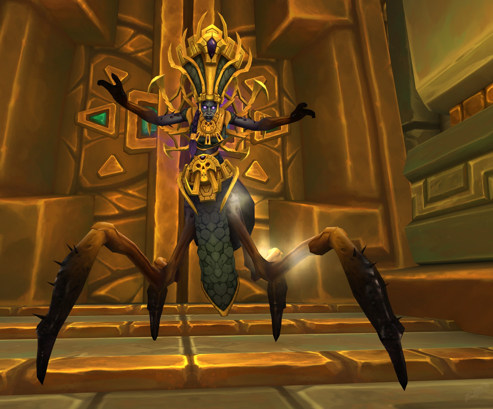
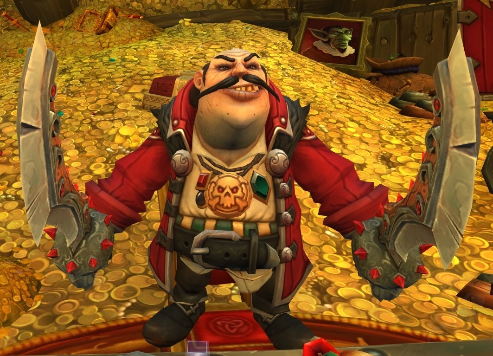

Atal'Dazar
Atal'Dazar (pronounced "AH-tahl-DUH-zawr")[1] is a series of royal and ancient pyramids[2] secluded high atop Mount Mugamba. It is named after King Dazar, the first king of the trolls. For millennia, the Zandalari kings and queens were laid to rest within the tombs of Atal'Dazar. These pyramids grew more elaborate with each passing ruler, as new rooms were constructed to house the deceased's vast wealth. Now, these once pristine halls have been corrupted by the Prophet Zul and his trusted lieutenant, Yazma, who seek to twist the power of these ancient kings for their own dark machinations.[3] It is the location of two dungeons in World of Warcraft, the Atal'Dazar and the Kings' Rest instances. King Rastakhan led the Warpack and the Horde adventurer to the pyramid to deal with the traitors.[4]  Allured by all the gold of the city, Jastor Gallywix and his Bilgewater thieves later appeared in the southern wing to loot it. They used Gallywix's Personal Teleporter to get there. Magister Umbric and an adventurer used a Void Portal to chase him down.[5] Princess Talanji allowed the Darkspear tribe to place the [Urn of Vol'jin] here. When the Speaker of the Horde did that, Bwonsamdi appeared and took it away.

Freehold is a town located in southern Tiragarde Sound. Unlike the Kul Tiran capital of Boralus, Freehold is a "free people's port": it has no rules or regulations about what vessels are allowed to dock. Privateers, mercenaries, and even pirates are welcome. One can get anything they want in Freehold, provided that they pay for it, in gold or steel.[2]  The town used to be open to anyone, until the Irontide Raiders declared it their own and started turning away anyone who wasn't a part of their crew.[3] Battle for Azeroth This section concerns content related to Battle for Azeroth. Freehold was used by the Irontide Raiders to transport Azerite weapons created by the Ashvane Trading Company. Their leader Harlan Sweete was forcing smaller crews around the town to pledge their loyalty to him[4] for a big job using the weapons provided by Ashvane.